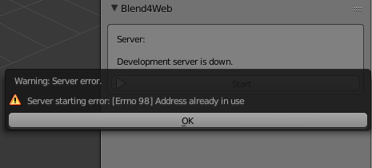

Развёртывание среды разработки¶
Вариант установки с развёртыванием дистрибутива SDK рекомендуется для разработчиков 3D-приложений. Если же нужно быстрое ознакомление с возможностями Blend4Web, то, возможно, будет удобнее экспресс-установка.
Перед установкой необходимо загрузить и установить совместимую версию Blender, согласно таблице.
Распаковка архива¶
Стабильные версии дистрибутива поставляются в виде архива
(blend4web_sdk_free_YY_MM.zip – бесплатный SDK, blend4web_sdk_pro_YY_MM.zip –
коммерческий SDK). Достаточно распаковать данный архив в любое место на диске.
Подключение аддона¶
Note
Если аддон ранее был установлен с помощью экспресс-установки, то рекомендуется прежде его удалить.
Запустить Blender, загрузить сцену по умолчанию File > New (горячие клавиши Ctrl-N).
Вызвать окно пользовательских настроек File > User Preferences... (горячие клавиши Ctrl-Alt-U). Во вкладке File в поле Scripts выбрать путь к директории blender_scripts.

Нажать Save User Settings и перезапустить Blender.
Повторно загрузить сцену по умолчанию, вызвать окно пользовательских настроек, перейти на вкладку Addons и выбрать категорию Import-Export. Отметить галочку напротив Import-Export: Blend4Web.

Нажать Save User Settings. Перезапуск Blender не требуется.
Для проверки:
В меню File > Export должны появиться опции Blend4Web (.json) и Blend4Web (.html).

Локальный сервер разработки¶
Настройки локального сервера разработки находятся в меню File > User Preferences... (горячие клавиши Ctrl-Alt-U).
Здесь можно изменить номер порта, используемый при создании локального сервера разработки (6687 по умолчанию), или включить автоматический запуск сервера при запуске Blender’a: для этого достаточно включить опцию Run on Startup в настройках аддона.

После изменения настроек локального сервера разработчика требуется перезапуск Blender’a.
Имеется возможность сделать локальный сервер доступным из внешней сети. Для этого достаточно включить свойство Enable External Requests.
Если не был настроен автоматический запуск сервера, то его можно стартовать вручную по кнопке Start Server во вкладке Render->Developement Server:

Note
Если путь к Blend4Web SDK не был указан, запуск локального сервера невозможен. При этом вместо кнопки Start Server будет выведено соответствующее сообщение.
В случае ошибки запуска сервера будет показано окно с описанием причины:
Чаще всего ошибка возникает из-за того, что указанный серверу адрес уже используется другим приложением.
Нажмите кнопку SDK Index для запуска в браузере обзорной веб-страницы Blend4Web SDK, доступной по адресу http://localhost:6687.
{kind=link}
При этом будет автоматически запущен браузер, используемой в операционной системе по умолчанию.
Кнопка Project Manager открывает менеджер проектов.
Кнопка Fast Preview вызывает просмотрщик сцен и загружает в него сцену, открытую в Blender на данный момент.
Сервер может быть остановлен по нажатию на кнопку Stop Server. Сервер также прекращает работу при закрытии программы Blender.
Запуск просмотрщика сцен и демо-приложений¶
На обзорной странице имеются ссылки для запуска просмотрщика сцен и демо-приложений. Для их запуска необходим браузер с поддержкой WebGL.

Note
Если приложения SDK не отображаются корректно, или появляются сообщения об ошибках, необходимо предпринять действия, описанные в разделе Проблемы при запуске движка.